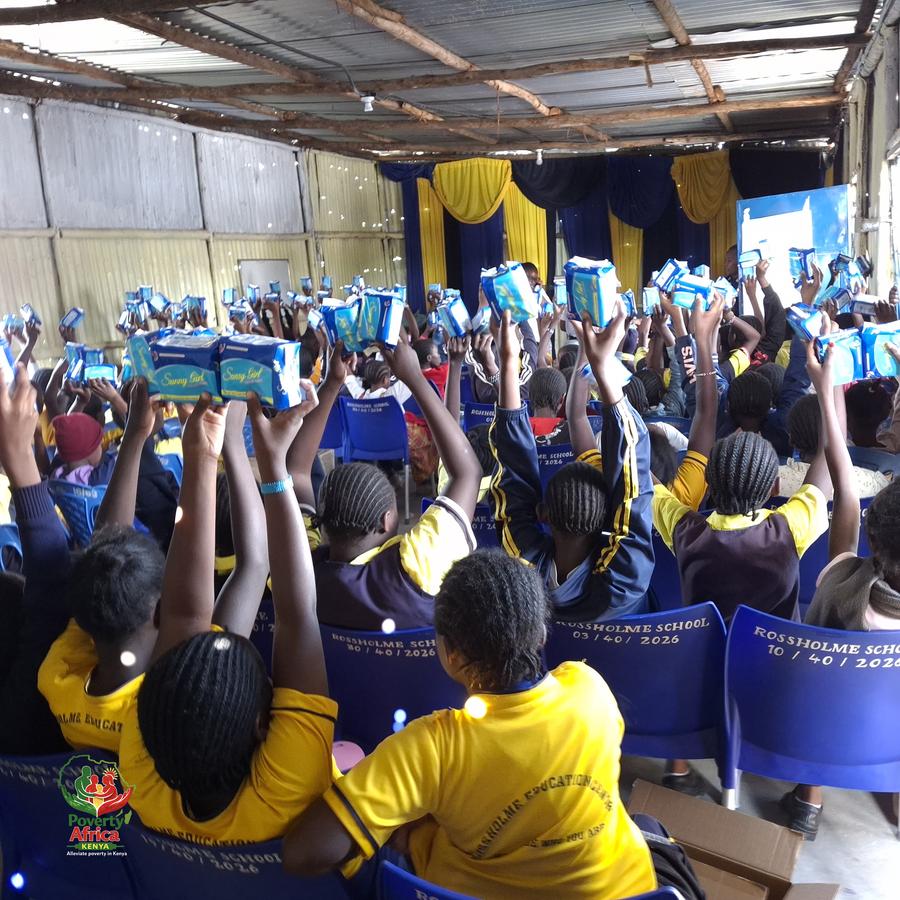
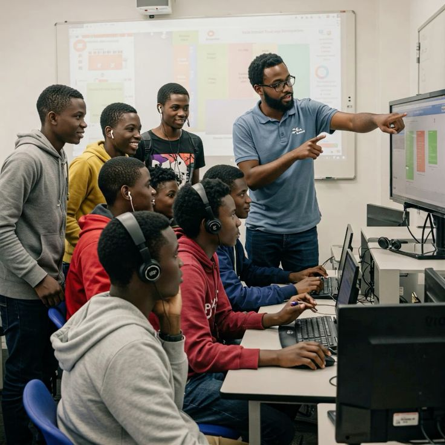
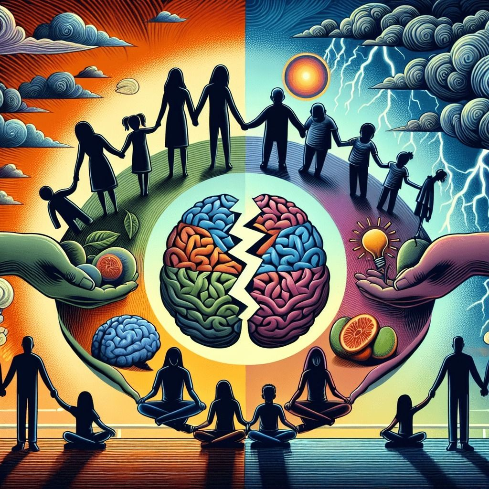

Women Empowerment
From Street Vendor to Business Owner: Mary's Journey
With a small loan from her VSLA group, Mary started a tailoring business that now employs two other women.
Stories of hope, impact, and transformation from across Kenya

With a small loan from her VSLA group, Mary started a tailoring business that now employs two other women.

After completing our digital skills program, David now works as a freelance web developer.

Through POAK's perinatal mental health program, Grace found support and healing.

How one woman's dedication is improving maternal and child health.